R/R RIBBON ROOM실험 기록 · 이전 결과를 보존한 검토 화면입니다. 새 그래픽 작업은 작업실에서 이어갑니다.
다른 실험 보기
B5.1 · 고정점과 변형 영역 · 검토 대기
시간과 음높이는 고정하고, 보조 폭만 움직입니다.
멘델스존 Op.80 실제 원음 22초 · 승인된 B4.2 A 기준. 아래 금색은 향후 변형을 허용할 최대 영역을 보여 주는 정적인 설계 그림입니다. 스프링 움직임을 적용한 결과는 아닙니다.
검토할 경계: 음표의 중심선과 모든 시작·끝은 그대로 두고, 재생선을 지난 0.9초 안쪽의 보조 폭만 최대 반폭 8px까지 허용합니다. 폭은 재생선과 같은 파트의 모든 음표 경계에서 부드럽게 0이 됩니다. 음표가 없는 구간에는 그리지 않습니다.
| 고정 | 변형 후보 |
|---|
| 가로 시간 좌표 · 125px/연주초 · 재생선 x=650 | 세로 방향의 대칭 보조 폭만 |
| 원래 pitch 중심선 · 주 윤곽 · 모든 동시음 가닥 | 중심선 바깥의 낮은 투명도 장식 영역 |
| 시작·끝 · 발음 ID · 쉼 · 실제 원음 | 과거 0.9초 안쪽, 이미 존재하는 음표 내부 |
8px·0.9초·재생선 taper 0.06초·음표 경계 taper 0.025초는 검토용 제안값입니다. 음표가 짧으면 허용 폭도 줄어듭니다. 민트 원은 고정 경계 표식이며 발음 표시가 아닙니다. 금색은 장식의 허용 범위이고 소리의 지속이나 실제 강약을 의미하지 않습니다.
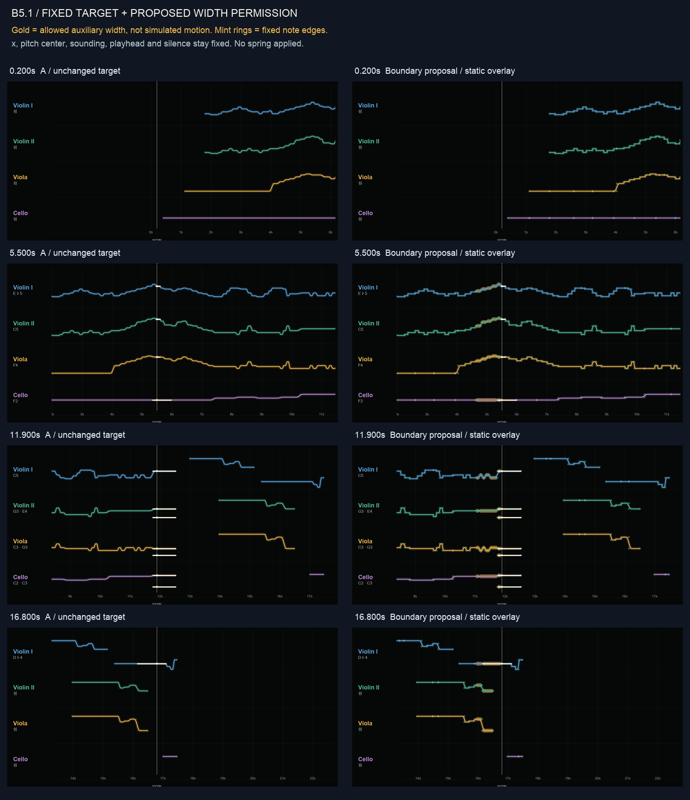
재생선 주변 확대
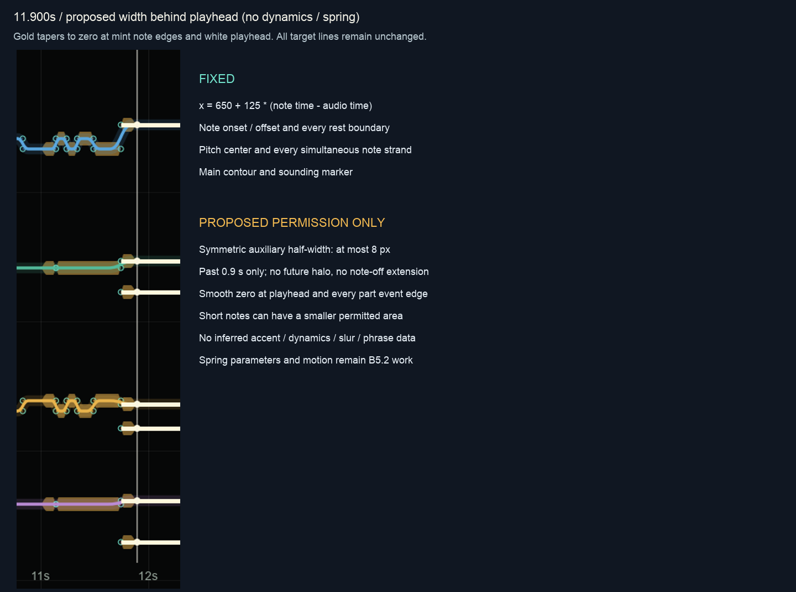
보존한 무효과 A 영상
이 영상에는 새 변형이 없습니다. 원래 발음과 움직임을 확인하는 기준입니다. 기존 임시 DTW A를 사용하며 수동 정렬 측정은 계속 보류합니다.
0.200초
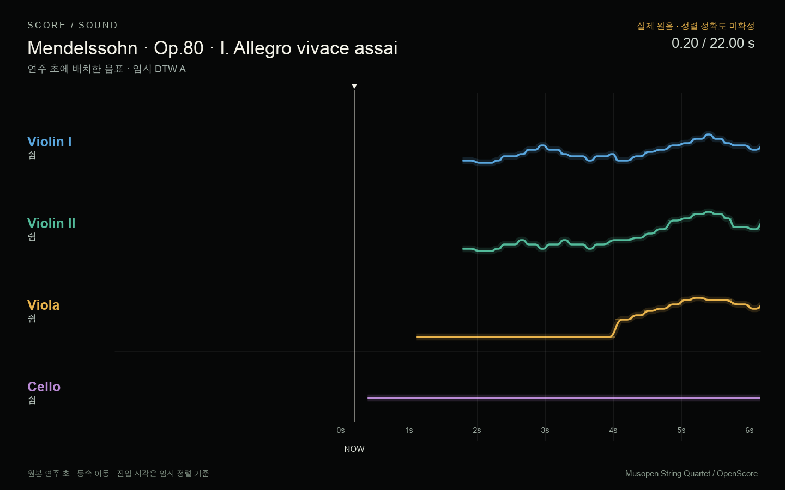
A · 원래 target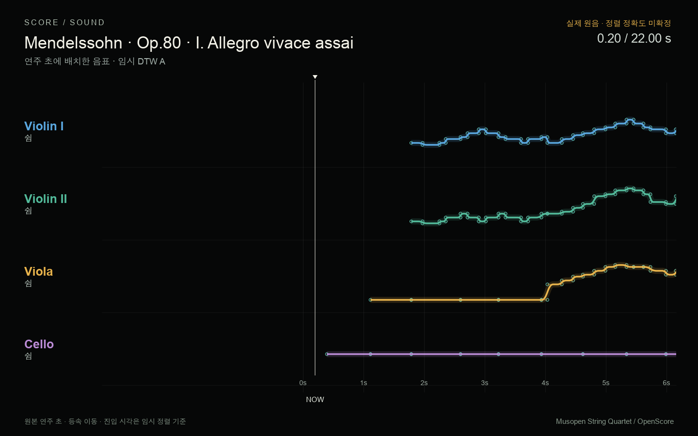
금색: 폭 변형 허용 영역 · 민트 원: 고정 음표 경계5.500초
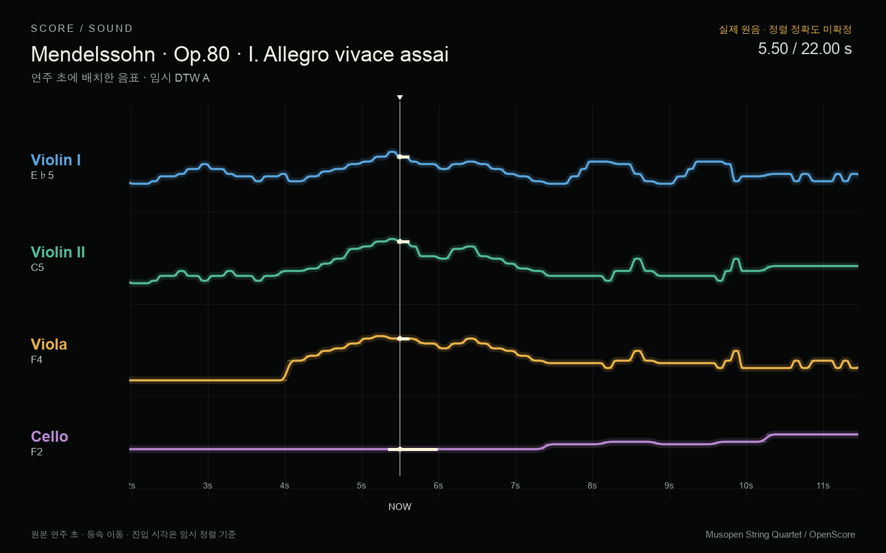
A · 원래 target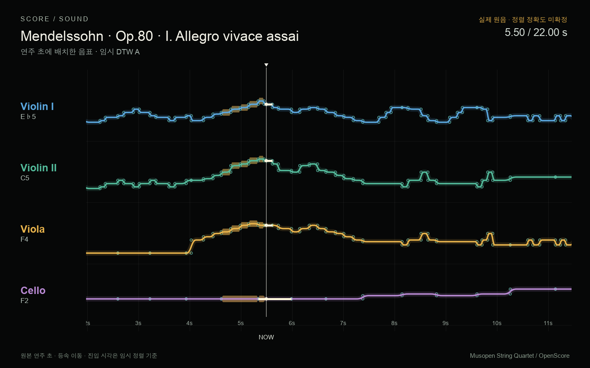
금색: 폭 변형 허용 영역 · 민트 원: 고정 음표 경계11.900초
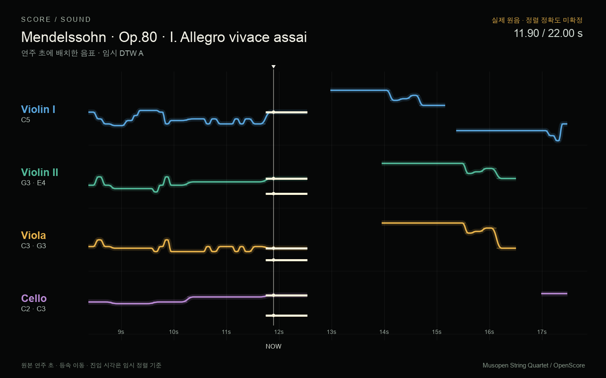
A · 원래 target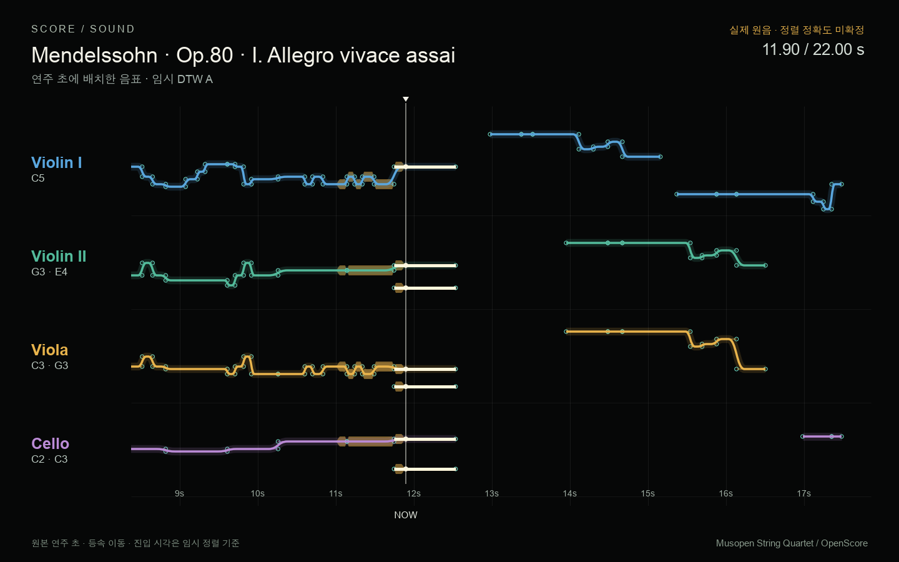
금색: 폭 변형 허용 영역 · 민트 원: 고정 음표 경계16.800초
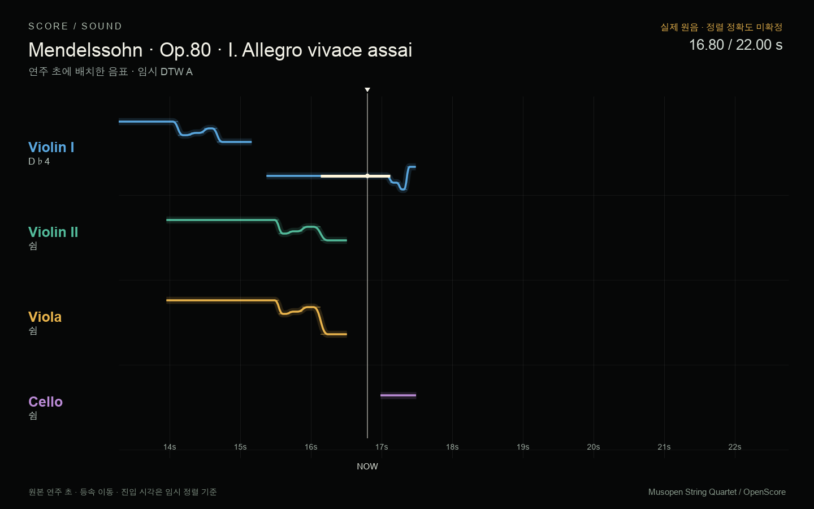
A · 원래 target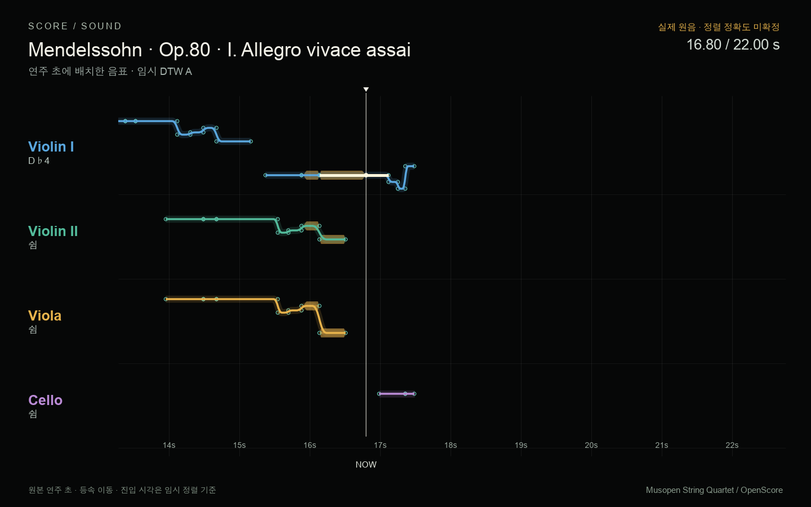
금색: 폭 변형 허용 영역 · 민트 원: 고정 음표 경계21.967초
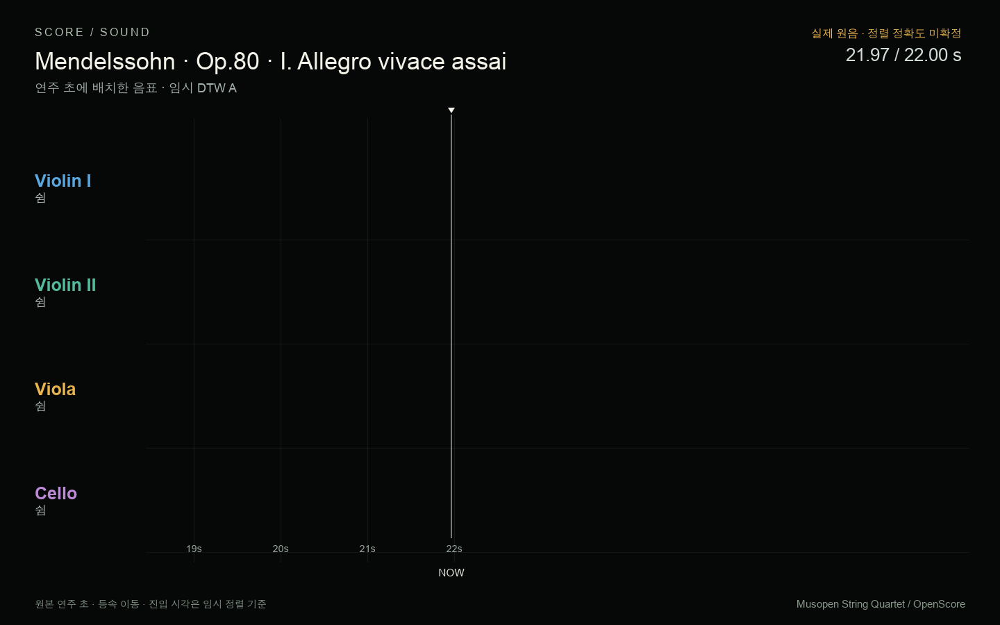
A · 원래 target 금색: 폭 변형 허용 영역 · 민트 원: 고정 음표 경계
금색: 폭 변형 허용 영역 · 민트 원: 고정 음표 경계경계 설정 JSON · 자동 검사 · 검증 범위 · 출처 · 보고서
그림은 공유 RibbonScene SVG를 기존 native Agg로 변환한 결과이며 브라우저 캡처가 아닙니다. B5.2의 실제 스프링 A/B는 이 경계 검토 이후 단계입니다.